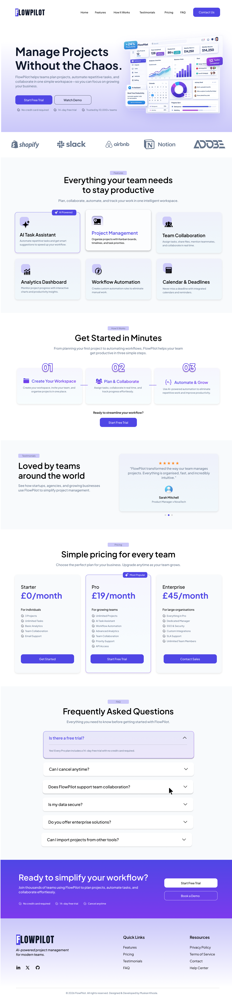

Making Complex Workflows Clear
The website needed to communicate the value of a workflow automation product in a way that felt clear, modern, and approachable while keeping the interface visually engaging.
A modern SaaS website designed to present a workflow automation product through a clean, responsive, and conversion-focused interface.
Flowpilot was created as a modern SaaS website focused on presenting workflow automation through clear messaging, responsive layouts, and a polished frontend experience.

The website needed to communicate the value of a workflow automation product in a way that felt clear, modern, and approachable while keeping the interface visually engaging.
The experience was structured around clear messaging, visual hierarchy, responsive layouts, and focused calls to action to create a polished SaaS website.
The Flowpilot experience combines clear product messaging, structured content, responsive layouts, and interactive frontend elements to create a polished SaaS website.
The interface presents Flowpilot's workflow automation concept through clear messaging, structured sections, and focused calls to action.
The website was developed with responsive layouts so the interface can adapt across different screen sizes and devices.
A modern visual system combines strong typography, cards, gradients, spacing, and product-focused visuals to create a polished SaaS presentation.
JavaScript was used alongside HTML and CSS to create interactive frontend behaviour and a more engaging browsing experience.
The page structure guides visitors through the product, its benefits, supporting information, and relevant actions in a logical sequence.
Calls to action and supporting content are positioned throughout the experience to keep the user journey focused and easy to follow.
The Flowpilot website was developed with a frontend-first approach, focusing on visual hierarchy, responsive layouts, reusable styling, and a smooth browsing experience.
The design combines product-focused visuals with clear typography and structured content to communicate the SaaS concept while keeping the interface approachable.
Organizing content into clear sections and visual hierarchy.
Building layouts that adapt across desktop and smaller screens.
Translating the design into HTML, CSS, and JavaScript.
The project was developed using a focused frontend stack to create a responsive and interactive web experience.
Semantic structure and organized page content.
Responsive layouts, visual styling, spacing, and interface design.
Frontend interactions and dynamic behaviour.
Layouts designed to provide a consistent experience across screen sizes.
Creating a clear hierarchy between product messaging, supporting content, visuals, and calls to action.
Maintaining a consistent and usable interface across different viewport sizes.
Building the interface with organized HTML, CSS, and JavaScript rather than relying on unnecessary dependencies.
Combining typography, spacing, cards, visuals, and interactive elements into a cohesive SaaS experience.
Explore the live website or view the source code to see how the project was designed and developed.